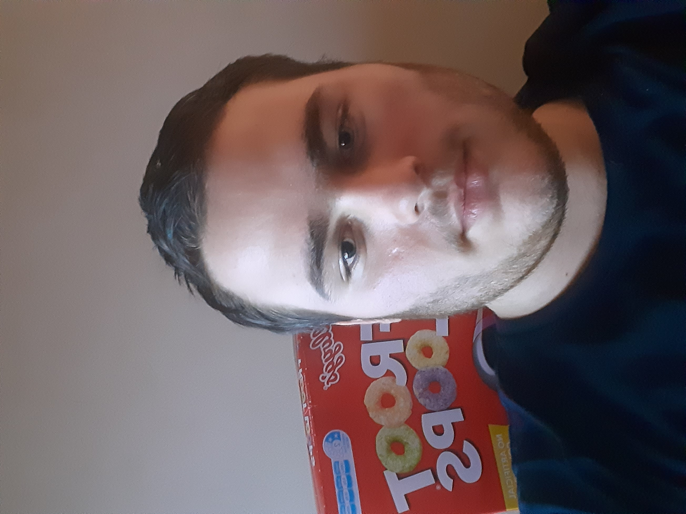
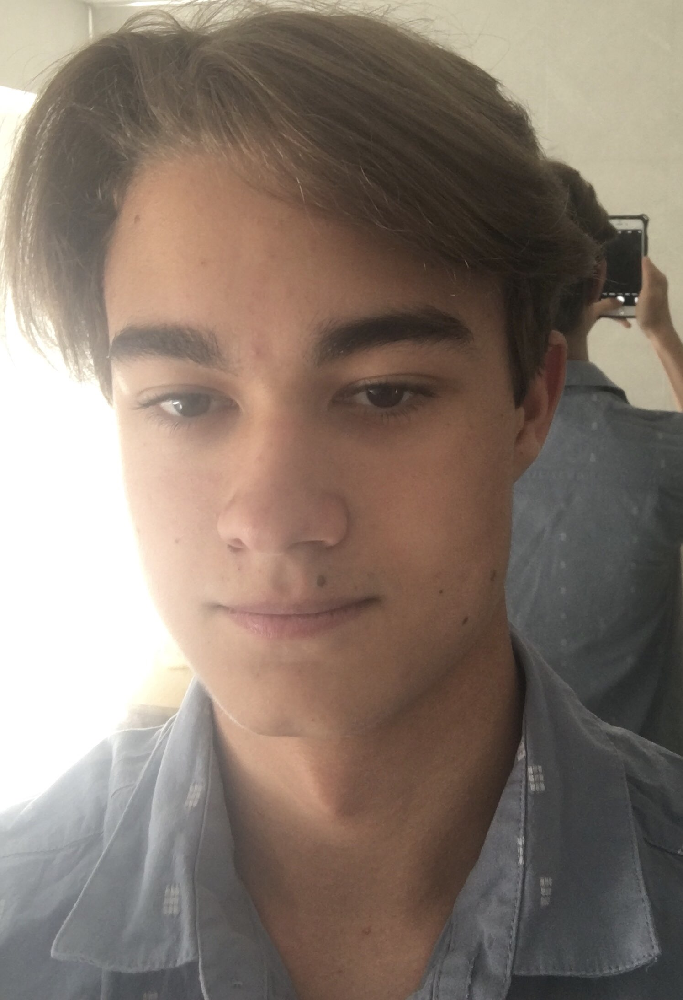
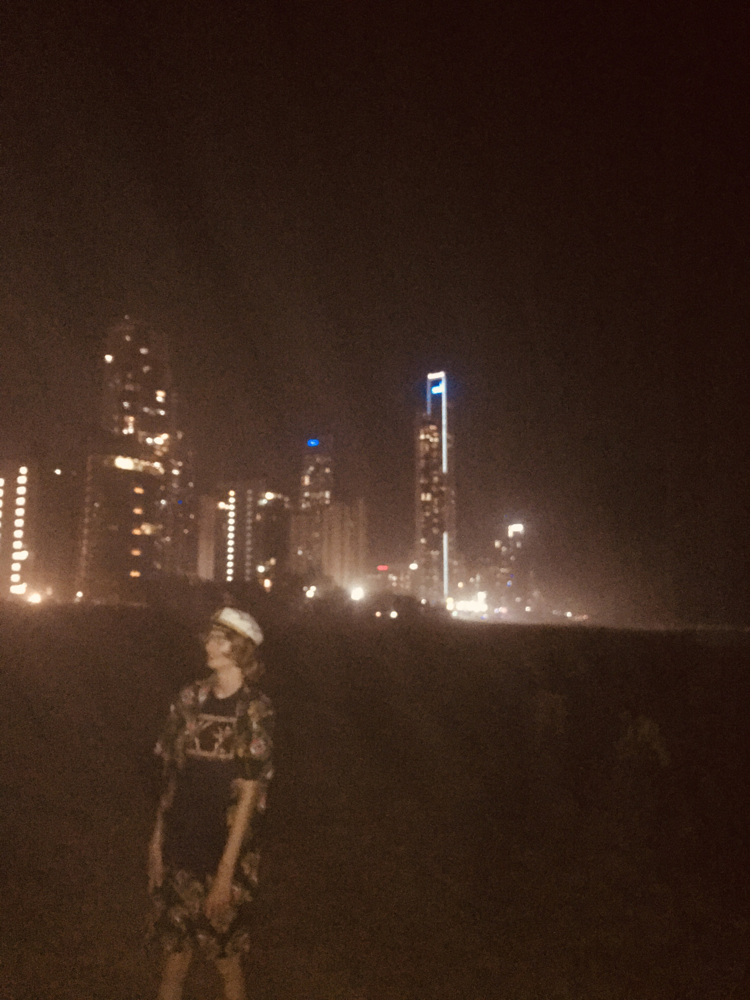
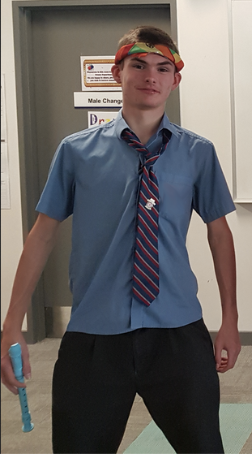
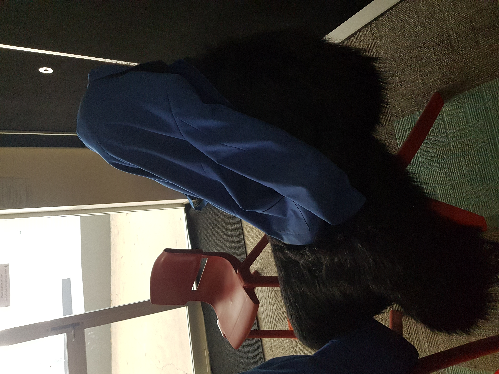
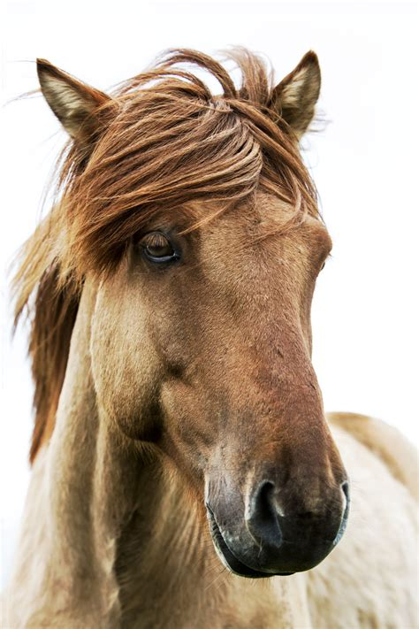
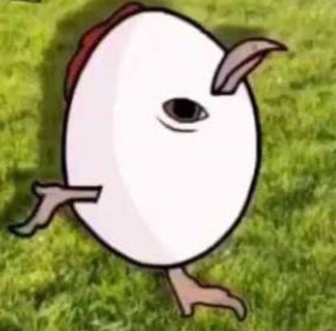

Gayden
2019-present
Died, came back from dead, ended up with no life, founded band as Jayden & The Vampires with two other people.
"I died lol"
Kleb
2019-present
Plays guitar. Founding Member.
"I play guitar, very not well"
Captain VB
2019-present
Plays instruments, founding member, alcoholic.
"God I could do with some beer."
Hippy
2020-present
Can't actually play any instruments, joined Joe Mama's Sleep Paralysis Demon for a talent show. We did(n't) win.
"Quote goes here"
Monkey
2020-present
Ape from the congo, spent his youth beating rocks with sticks. As an adult he utilised his rock beating skills to learn the drums and joined Joe Mama's Sleep Paralysis Demon for the school talent show.
"Kefe"
Horse
2020-present
Man who plays guitar and sings. Joined after the worlds most amazing musical performance to help advance the band's career.
"You might unlock his secret gay."
The Leg
2020-present
The band realised they were technically a boy band due to being all male, so they employed a female member to stop being a boy band.
"Cheg."